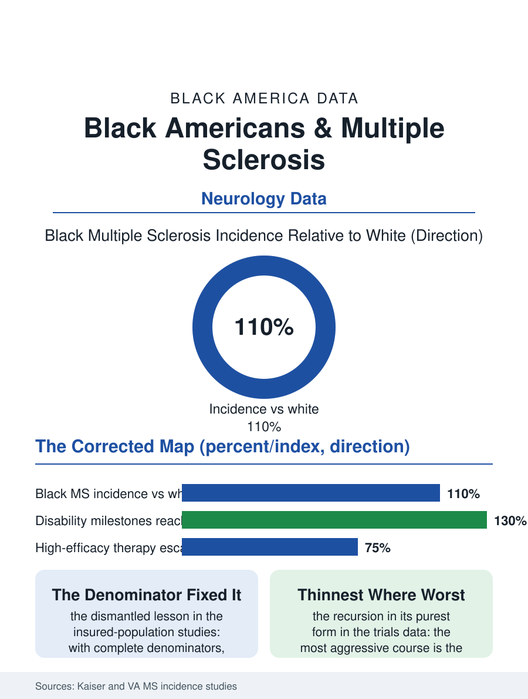

Black Public Health
The Lesson Unlearned: Black Americans and Multiple Sclerosis
The textbook said MS spared Black Americans; complete denominators found incidence at parity and a more aggressive course, undertreated. The MS file.

Multiple sclerosis was taught for generations as a disease of northern European ancestry that rarely touched Black Americans; the incidence data of the last two decades have dismantled the lesson, finding Black incidence comparable to or exceeding the white rate in several large studies, with the disease's course in Black patients running more aggressive in the imaging and disability data. This article reads the MS file.
The Lesson Unlearned
The correction's history is the file's opening: the mid-century teaching, built on the veteran and clinic populations the era's medicine saw, assigned MS a racial geography that the modern insured-population studies, the Kaiser and military health system analyses with their complete denominators, have replaced with a different map, Black incidence at or above the white figure, particularly among Black women, whose rates in the largest study exceeded every other group's. The teaching's persistence did its own damage in the diagnostic file: the Black patient with the optic neuritis or the gait disorder met a differential from which the textbook had removed her disease, the diagnostic delay literature for MS recording the Black patient's longer road to the neurology referral and the MRI in the pattern of the Parkinson's file, with the delay priced in the disease's own currency, the relapses untreated, the lesions accumulating, the disease-modifying therapies started after the window in which they protect most. The course data deepen the file: the imaging studies find Black patients accruing brain volume loss and lesion burden faster, the disability scales reaching their milestones earlier, and the retinal measures, the field's sensitive progression marker, confirming the gradient, a biological aggressiveness the researchers are careful to present alongside the treatment variables, the therapy escalation's timeliness being the course's social component. The pediatric and young adult onset cases at the file's edge sharpen the point: the adolescent whose disease the old map would have missed entirely now enters the early-treatment era the adult data argue for, and the registries' youngest cohorts will be the correction's first full beneficiaries, their disability curves the experiment the field is already running.
Therapies and the Escalation Gap
The disease-modifying therapies, the two dozen agents of the modern MS armamentarium, are the file's treatment ladder, their logic being early and effective suppression of the inflammatory activity, and the claims data show the ladder's racial pattern in the now-familiar form: Black patients start therapies later relative to diagnosis, escalate to the high-efficacy agents at lower rates, and appear in the pivotal trials at the under-enrolled shares of the trials file, so that the evidence for the aggressive course's management is thinnest in the population whose course is most aggressive, the file's recursion in its purest form. The specialty access map compounds it: the MS centers concentrate in the academic metros, the neurologist density file applies, and the infusion therapies' logistics, the monthly or semiannual infusions at the center, price the rural and hourly patient's adherence in the schedule file's currency. The vitamin D and latitude hypotheses that once explained the disease's geography have been reworked by the new incidence map into the file's scientific frontier, the environmental and genetic interplay under active study in cohorts finally assembled to include the population the old map excluded.
The Corrected Census
The MS file closes on the correction's completeness as its measure: the disease's census now counts the Black patient, the registries and the advocacy organizations have their Black chapters and their targeted research funds, the fellowship classes of MS specialists show the pipeline's slow diversification, and the diagnostic teaching, in the current textbooks' editions, carries the new map, so that the next generation's optic neuritis will meet a differential that includes her. What the correction cost is the file's ledger: the decades of the old map's authority, during which the disease progressed untreated in the patients the map said did not have it, an iatrogenic geography whose victims the disability data now count without being able to restore. The incidence studies count the cases at parity and above. The file's last entry is the textbook's: every atlas, including this one, is a map drawn from what its makers could see, and the MS file exists to record what the seeing cost when the map was wrong, and to mark, in the corrected edition, the patients who were there all along, in the lesions' plain sight, waiting for the lesson to change.
More in Black Public Health
Hypertension Among Black Adults: Prevalence, Control, and Consequences
About 55 percent of Black adults have hypertension — the highest rate of any U.S. group. Prevalence, onset, control, and the stroke, heart, and kidney consequences in the data.
Diabetes Among Black Adults: Prevalence and Complications
Nearly one in five Black adults has diabetes, diagnosed or undiagnosed — and its complications fall with particular weight. The CDC data on prevalence, control, and outcomes.
Black Life Expectancy: The Gap at Birth and Its Causes
Black life expectancy at birth is about 73 years, roughly five years below the national figure — the summary measure of every health gap in this section. The CDC data.
Source: Kaiser Permanente and Veterans Affairs multiple sclerosis incidence studies; MS outcomes and treatment disparities literature.